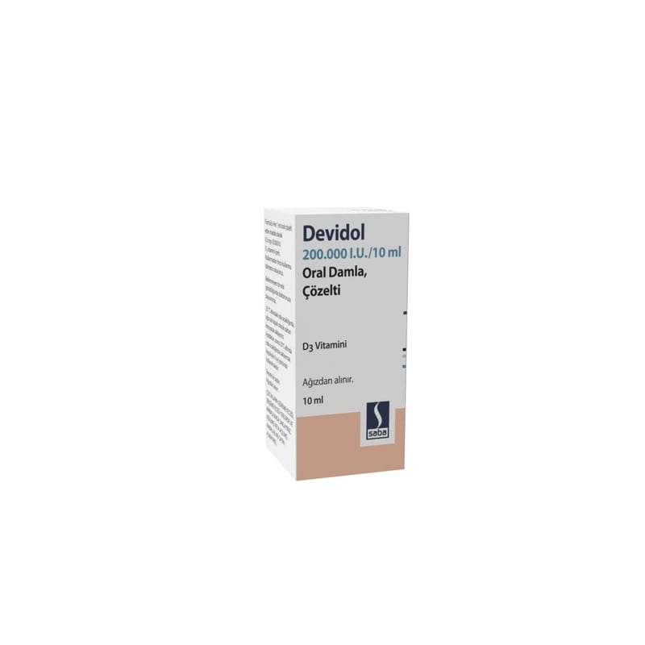

Devidol 150.000 I.U./10 ml Oral Damla, Çözelti, 30 ml

Ne için kullanılır
KT · Bölüm 1DEVİDOL, etkin madde olarak, kolekalsiferol (vitamin D
) içerir. Kolekalsiferol koyun yünü yağından üretilmektedir.
DEVİDOL, şeffaf, karakteristik kokulu çözeltidir. Damlalıklı 10 veya 30 mL’lik amber renkli Tip III cam şişe içerisinde karton kutularda kullanıma sunulmaktadır.
DEVİDOL, D vitamini eksikliği tedavisinde, idamesinde ve önlenmesinde kullanılır.